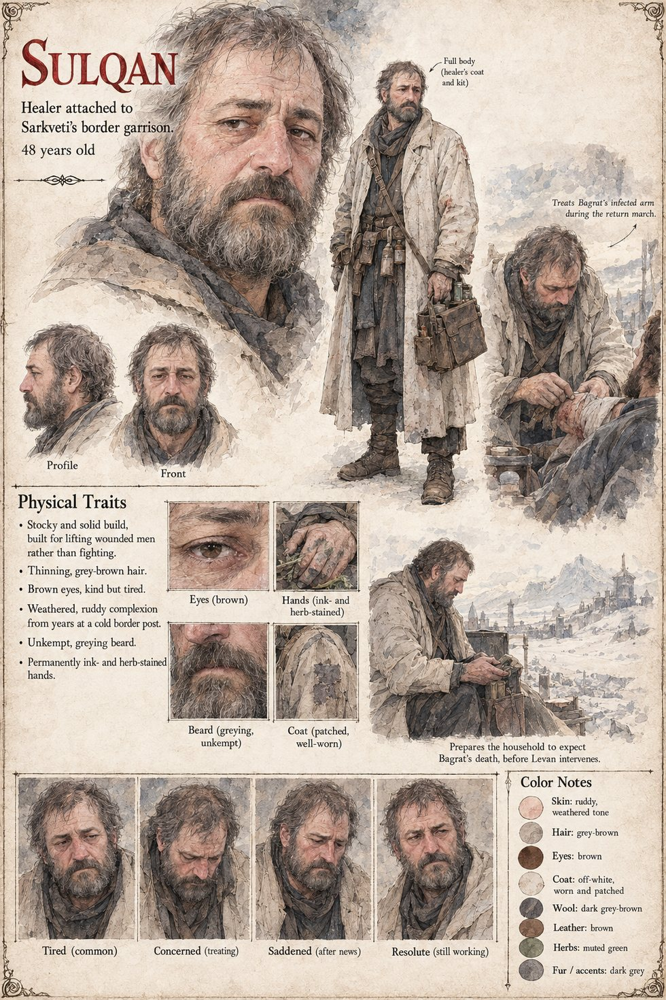

Sulqan
Healer attached to Sarkveti's border garrison · 48 on the sheet
The border garrison's own healer, a decent and exhausted man, who sees Bagrat carried to Tavgora's gates fevered past recognizing his own name, his sword arm swollen black to the elbow, and has already begun preparing the household for losing him. Levan's six-hour surgery makes that preparation unnecessary. The sheet makes him forty-eight, stocky and built for lifting wounded men rather than fighting, with thinning grey-brown hair, an unkempt greying beard, a ruddy complexion from years at a cold border post, ink- and herb-stained hands and a patched off-white coat. It shows him treating the arm on the return march, then preparing the household for the loss.